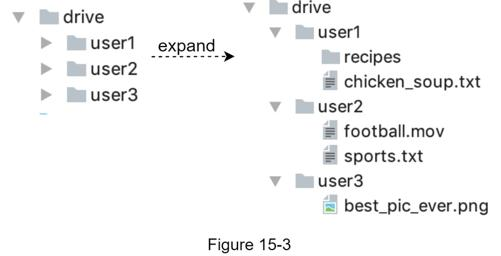
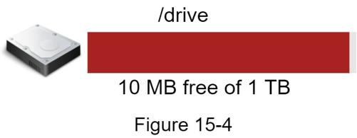
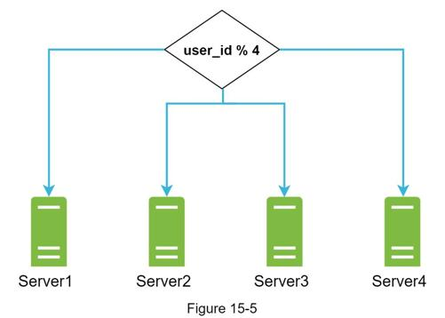
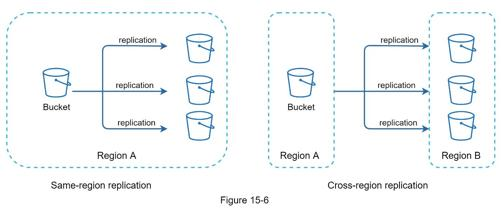
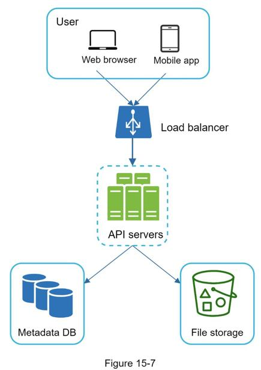
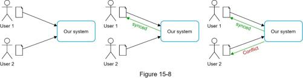
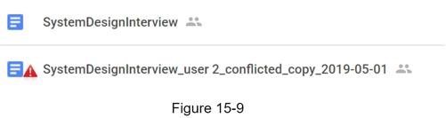
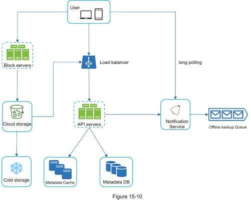

Instead of showing the high-level design diagram from the beginning, we will use a slightly different approach. We will start with something simple: build everything in a single server. Then, gradually scale it up to support millions of users. By doing this exercise, it will refresh your memory about some important topics covered in the book.
Let us start with a single server setup as listed below:
•A web server to upload and download files.
•A database to keep track of metadata like user data, login info, files info, etc.
•A storage system to store files. We allocate 1TB of storage space to store files.
We spend a few hours setting up an Apache web server, a MySql database, and a directory called drive/ as the root directory to store uploaded files. Under drive/ directory, there is a list of directories, known as namespaces. Each namespace contains all the uploaded files for that user. The filename on the server is kept the same as the original file name. Each file or folder can be uniquely identified by joining the namespace and the relative path.
Figure 15-3 shows an example of how the /drive directory looks like on the left side and its expanded view on the right side.

What do the APIs look like? We primary need 3 APIs: upload a file, download a file, and get file revisions.
1. Upload a file to Google Drive
Two types of uploads are supported:
•Simple upload. Use this upload type when the file size is small.
•Resumable upload. Use this upload type when the file size is large and there is high chance of network interruption.
Here is an example of resumable upload API:
https://api.example.com/files/upload?uploadType=resumable
Params:
•uploadType=resumable
•data: Local file to be uploaded.
A resumable upload is achieved by the following 3 steps [2]:
•Send the initial request to retrieve the resumable URL.
•Upload the data and monitor upload state.
•If upload is disturbed, resume the upload.
2. Download a file from Google Drive
Example API: https://api.example.com/files/download
Params:
•path: download file path.
Example params:
{
"path": "/recipes/soup/best_soup.txt"
}
3. Get file revisions
Example API: https://api.example.com/files/list_revisions
Params:
•path: The path to the file you want to get the revision history.
•limit: The maximum number of revisions to return.
Example params:
{
"path": "/recipes/soup/best_soup.txt",
"limit": 20
}
All the APIs require user authentication and use HTTPS. Secure Sockets Layer (SSL) protects data transfer between the client and backend servers.
As more files are uploaded, eventually you get the space full alert as shown in Figure 15-4.

Only 10 MB of storage space is left! This is an emergency as users cannot upload files anymore. The first solution comes to mind is to shard the data, so it is stored on multiple storage servers. Figure 15-5 shows an example of sharding based on user_id.

You pull an all-nighter to set up database sharding and monitor it closely. Everything works smoothly again. You have stopped the fire, but you are still worried about potential data losses in case of storage server outage. You ask around and your backend guru friend Frank told you that many leading companies like Netflix and Airbnb use Amazon S3 for storage. “Amazon Simple Storage Service (Amazon S3) is an object storage service that offers industry-leading scalability, data availability, security, and performance” [3]. You decide to do some research to see if it is a good fit.
After a lot of reading, you gain a good understanding of the S3 storage system and decide to store files in S3. Amazon S3 supports same-region and cross-region replication. A region is a geographic area where Amazon web services (AWS) have data centers. As shown in Figure 15-6, data can be replicated on the same-region (left side) and cross-region (right side). Redundant files are stored in multiple regions to guard against data loss and ensure availability. A bucket is like a folder in file systems.

After putting files in S3, you can finally have a good night's sleep without worrying about data losses. To stop similar problems from happening in the future, you decide to do further research on areas you can improve. Here are a few areas you find:
•Load balancer: Add a load balancer to distribute network traffic. A load balancer ensures evenly distributed traffic, and if a web server goes down, it will redistribute the traffic.
•Web servers: After a load balancer is added, more web servers can be added/removed easily, depending on the traffic load.
•Metadata database: Move the database out of the server to avoid single point of failure. In the meantime, set up data replication and sharding to meet the availability and scalability requirements.
•File storage: Amazon S3 is used for file storage. To ensure availability and durability, files are replicated in two separate geographical regions.
After applying the above improvements, you have successfully decoupled web servers, metadata database, and file storage from a single server. The updated design is shown in Figure 15-7.

For a large storage system like Google Drive, sync conflicts happen from time to time. When two users modify the same file or folder at the same time, a conflict happens. How can we resolve the conflict? Here is our strategy: the first version that gets processed wins, and the version that gets processed later receives a conflict. Figure 15-8 shows an example of a sync conflict.

In Figure 15-8, user 1 and user 2 tries to update the same file at the same time, but user 1’s file is processed by our system first. User 1’s update operation goes through, but, user 2 gets a sync conflict. How can we resolve the conflict for user 2? Our system presents both copies of the same file: user 2’s local copy and the latest version from the server (Figure 15-9). User 2 has the option to merge both files or override one version with the other.

While multiple users are editing the same document at the same, it is challenging to keep the document synchronized. Interested readers should refer to the reference material [4] [5].
Figure 15-10 illustrates the proposed high-level design. Let us examine each component of the system.

User: A user uses the application either through a browser or mobile app.
Block servers: Block servers upload blocks to cloud storage. Block storage, referred to as block-level storage, is a technology to store data files on cloud-based environments. A file can be split into several blocks, each with a unique hash value, stored in our metadata database. Each block is treated as an independent object and stored in our storage system (S3). To reconstruct a file, blocks are joined in a particular order. As for the block size, we use Dropbox as a reference: it sets the maximal size of a block to 4MB [6].
Cloud storage: A file is split into smaller blocks and stored in cloud storage.
Cold storage: Cold storage is a computer system designed for storing inactive data, meaning files are not accessed for a long time.
Load balancer: A load balancer evenly distributes requests among API servers.
API servers: These are responsible for almost everything other than the uploading flow. API servers are used for user authentication, managing user profile, updating file metadata, etc.
Metadata database: It stores metadata of users, files, blocks, versions, etc. Please note that files are stored in the cloud and the metadata database only contains metadata.
Metadata cache: Some of the metadata are cached for fast retrieval.
Notification service: It is a publisher/subscriber system that allows data to be transferred from notification service to clients as certain events happen. In our specific case, notification service notifies relevant clients when a file is added/edited/removed elsewhere so they can pull the latest changes.
Offline backup queue: If a client is offline and cannot pull the latest file changes, the offline backup queue stores the info so changes will be synced when the client is online.
We have discussed the design of Google Drive at the high-level. Some of the components are complicated and worth careful examination; we will discuss these in detail in the deep dive.